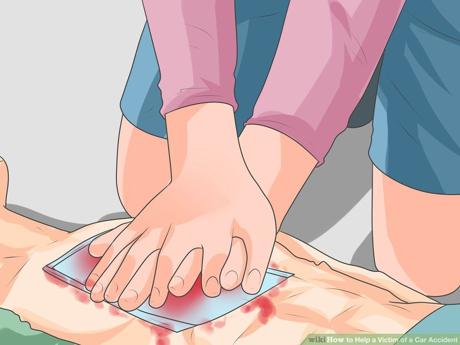

http://www.wikihow.com/ License: Creative Commons Uploaded by: Wikivisual
- Apply firm pressure to the wound with a folded cloth or bandage.
- Remove obvious debris from the wound, such as sticks or grass.
- If the object is embedded in the body, do noz remove it.
- When bleeding has stopped, tape a clean bandage over the cut.